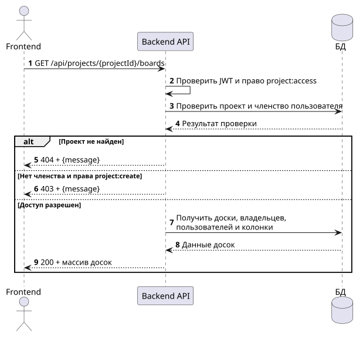

Возвращает список досок проекта с настройками и колонками, без карточек задач.
Доступ: право project:access и членство в проекте либо право project:create.
Используется в UC-5. Открытие досок выбранного проекта.
Схема работы


@startuml
autonumber
actor "Frontend" as FE
participant "Backend API" as API
database "БД" as DB
FE -> API : GET /api/projects/{projectId}/boards
API -> API : Проверить JWT и право project:access
API -> DB : Проверить проект и членство пользователя
DB --> API : Результат проверки
alt Проект не найден
API --> FE : 404 + {message}
else Нет членства и права project:create
API --> FE : 403 + {message}
else Доступ разрешен
API -> DB : Получить доски, владельцев,\nпользователей и колонки
DB --> API : Данные досок
API --> FE : 200 + массив досок
end
@endumlАлгоритм
Проверить право
project:accessи найти проект по идентификатору. Если проект не найден, вернуть404.Проверить членство пользователя в проекте или наличие права
project:create. При отсутствии обоих условий вернуть403.Получить все доски проекта и отсортировать их по названию, затем по идентификатору. Колонки каждой доски отсортировать по полю
order.Добавить сведения о владельцах, пользователях и настройках досок. Для каждой колонки установить пустой массив
cards.Вернуть массив досок. Членство пользователя в отдельных досках при получении списка не проверяется.
Входные параметры
Параметр пути (PATH). Тело запроса и QUERY-параметры отсутствуют.
Поле | Тип | Обязательно | Описание |
|---|---|---|---|
| integer | Да | Идентификатор проекта |
Ответ
200 OK: возвращает массив объектов TaskBoardDto со сведениями о досках проекта.
Поле | Тип | Описание |
|---|---|---|
| integer | Идентификатор доски |
| integer | Идентификатор владельца |
| integer, nullable | Идентификатор проекта |
| string | Название доски |
| string | Логин владельца |
| string[] | Логины пользователей доски, отсортированные по алфавиту |
| object | Настройки отображения полей карточки |
| array | Колонки доски |
Элементы массива columns:
Поле | Тип | Описание |
|---|---|---|
| integer | Идентификатор колонки |
| string | Название колонки |
| integer | Порядковый номер колонки |
| boolean | Признак запрета создания карточек в колонке |
| boolean | Признак возможности завершения задачи |
| boolean | Признак колонки завершенных задач |
| array | Карточки задач, всегда |
Объект cardFieldSettings содержит настройки полей карточек типа boolean. Их состав описан в документации модуля «Канбан и задачи».
Если у проекта отсутствуют доски, система возвращает 200 OK с пустым массивом [].
Получение списка досок не добавляет пользователя в board_users.
Ошибки
Код | Причина | Ответ |
|---|---|---|
403 | Пользователь не состоит в проекте и не имеет права |
|
404 | Проект не найден |
|
Общие ошибки авторизации и проверки прав доступа описаны в документации API.
Пример запроса
GET /api/projects/12/boards
Если проект создан без шаблона и доски еще не добавлены, система возвращает пустой массив.